EE779 : Advanced Topics in Signal Processing
Contents
- Question 1 : Comparison of Spatial Spectral Estimators
- Q1 a) Theta = 15
- Q1 a) Beamforming Method
- Q1 a) Capon Method
- Q1 a) Root-Music Estimate
- Q1 a) ESPRIT Estimate
- Q1 b) Theta = 7.5
- Q1 b) Beamforming Method
- Q1 b) Capon Method
- Q1 b) Root-Music Estimate
- Q1 b) ESPRIT Estimate
- Q1 Conclusions
- Question 2 : Spatial Spectral Estimators applied to Measured Data
- Q2 Beamforming Method
- Q2 Capon Method
- Q2 Root-Music Estimate
- Q2 ESPRIT Estimate
- Q2 Conclusion
- Written Assignment : Ques 2
Submitted by : Navjot Singh (130110071)
close all clear all
(Used functions on beamforming,uladata and capon are courtesy of Petre Stoica (2005))
Question 1 : Comparison of Spatial Spectral Estimators
Because of the noise component in generation of the ULA data, we take 50 iterations of ULA data generation and average the final results.
In each iteration, we calculate a new ULA data set, the corresponding spectra via Beamforming, Capon's method. Also, we calculate the Direction of arrival estimates using the Root Music method as well as ESPRIT method.
function [beamf,capon,root,esprit] = computeEstimates_q1(theta) P = eye(2); num_samp=128; y = zeros(10, 100, 50); beamf_phi = zeros(50, num_samp); capon_phi = zeros(50, num_samp); theta1 = zeros(50, 2); theta2 = zeros(50, 2); % Because of the noise component in generation of the ULA data, we will % take fifty iterations of ULA data generation and average the final % results. for i=1:50, y(:,:,i) = uladata([0, theta] ,P,100,1,10,0.5); beamf_phi(i,:) = beamform(y(:,:,i), num_samp, 0.5); capon_phi(i,:) = capon_sp(y(:,:,i), num_samp, 0.5); theta1(i,:) = root_music_doa(y(:,:,i), 2, 0.5); theta2(i,:) = esprit_doa(y(:,:,i), 2, 0.5); end phi1avg(1:num_samp) = mean(beamf_phi(:,1:num_samp)); beamf = phi1avg; phi2avg(1:num_samp) = mean(capon_phi(:,1:num_samp)); capon = phi2avg; root = theta1; esprit = theta2;
Q1 a) Theta = 15
[beamf_1,capon_1,root_theta_1,esprit_theta_1]=computeEstimates_q1(15);
Q1 a) Beamforming Method
The function returns the average of the 50 sample sets taken. We plot this average power spectrum here.
fig = figure; plot(20*log10(beamf_1)) ylabel('Power (dB)') title('Averaged Spatial Spectrum: Beamforming method'); xlabel('n') set(gcf, 'Position', get(0, 'Screensize')); saveas(fig,'./results/Q1/beamf_q1a.jpg','jpg');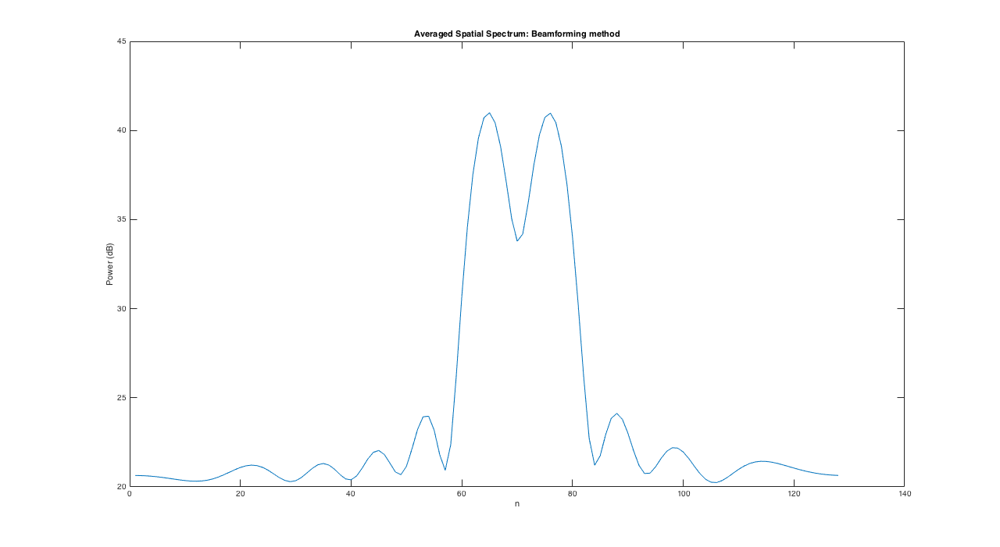
Q1 a) Capon Method
The function returns the average of the 50 sample sets taken. We plot this average power spectrum here.
fig = figure; plot(20*log10(capon_1)) ylabel('Power (dB)') title('Averaged Spatial Spectrum: Capon''s method'); xlabel('n') set(gcf, 'Position', get(0, 'Screensize')); saveas(fig,'./results/Q1/capon_q1a.jpg','jpg');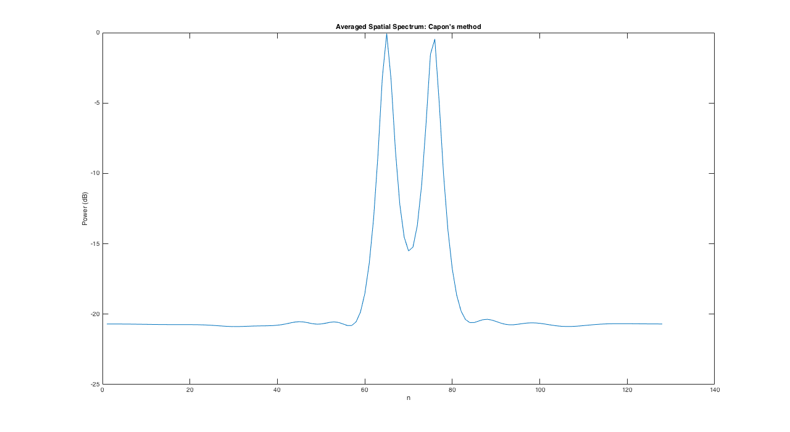
Q1 a) Root-Music Estimate
For Root-Music, we get an estimate for the direction of arrival. We see the spread of estimates by plotting the estimates from each data set with the same height.
fig = figure; stem(root_theta_1(:), ones(100,1)); title('Root-Music method') xlabel('Angle') set(gcf, 'Position', get(0, 'Screensize')); saveas(fig,'./results/Q1/rootmusic_q1a.jpg','jpg');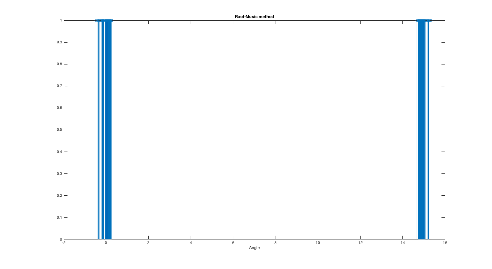
Q1 a) ESPRIT Estimate
For ESPRIT, we get an estimate for the direction of arrival. We see the spread of estimates by plotting the estimates from each data set with the same height.
fig = figure; stem(esprit_theta_1(:), ones(100,1)); title('ESPRIT method') xlabel('Angle') set(gcf, 'Position', get(0, 'Screensize')); saveas(fig,'./results/Q1/esprit_q1a.jpg','jpg');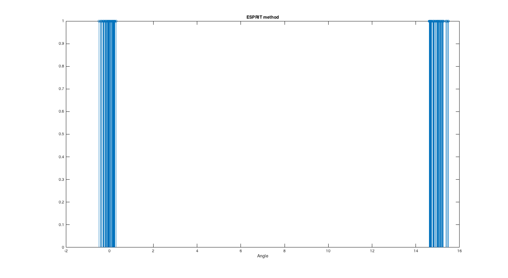
Q1 b) Theta = 7.5
[beamf_2,capon_2,root_theta_2,esprit_theta_2]=computeEstimates_q1(7.5);
Q1 b) Beamforming Method
The function returns the average of the 50 sample sets taken. We plot this average power spectrum here.
fig = figure; plot(20*log10(beamf_2)) ylabel('Power (dB)') title('Averaged Spatial Spectrum: Beamforming method'); xlabel('n') set(gcf, 'Position', get(0, 'Screensize')); saveas(fig,'./results/Q1/beamf_q1b.jpg','jpg');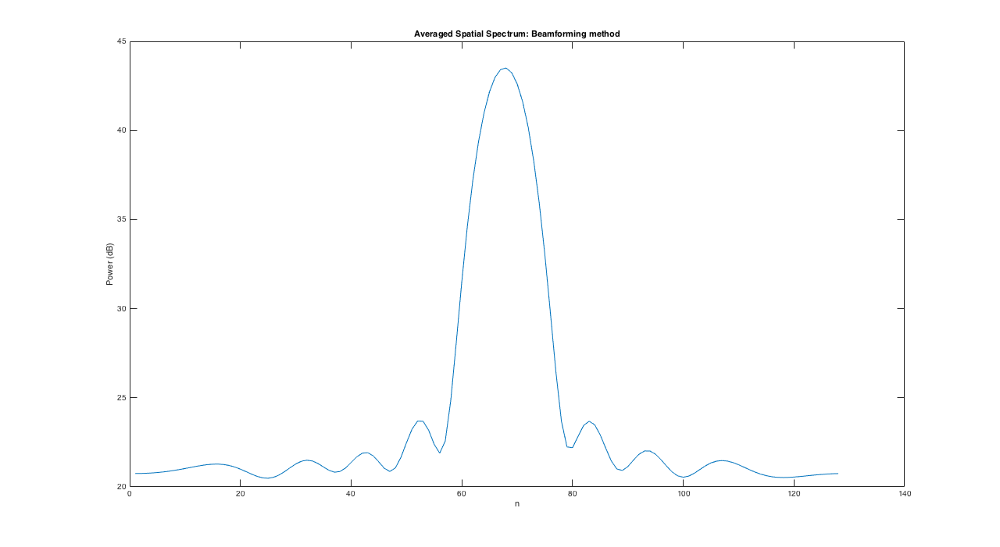
Q1 b) Capon Method
The function returns the average of the 50 sample sets taken. We plot this average power spectrum here.
fig = figure; plot(20*log10(capon_2)) ylabel('Power (dB)') title('Averaged Spatial Spectrum: Capon''s method'); xlabel('n') set(gcf, 'Position', get(0, 'Screensize')); saveas(fig,'./results/Q1/capon_q1b.jpg','jpg');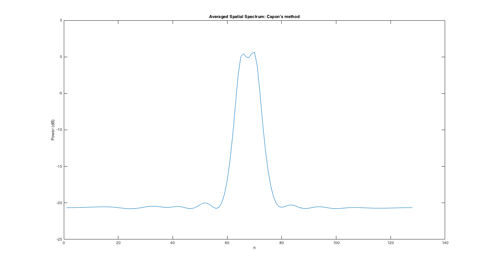
Q1 b) Root-Music Estimate
For Root-Music, we get an estimate for the direction of arrival. We see the spread of estimates by plotting the estimates from each data set with the same height.
fig = figure; stem(root_theta_2(:), ones(100,1)); title('Root-Music method') xlabel('Angle') set(gcf, 'Position', get(0, 'Screensize')); saveas(fig,'./results/Q1/rootmusic_q1b.jpg','jpg');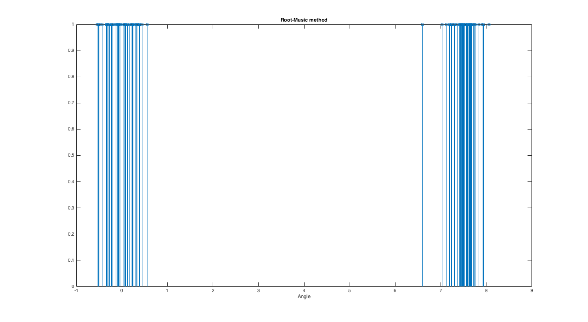
Q1 b) ESPRIT Estimate
For ESPRIT, we get an estimate for the direction of arrival. We see the spread of estimates by plotting the estimates from each data set with the same height.
fig = figure; stem(esprit_theta_2(:), ones(100,1)); title('ESPRIT method') xlabel('Angle') set(gcf, 'Position', get(0, 'Screensize')); saveas(fig,'./results/Q1/esprit_q1b.jpg','jpg');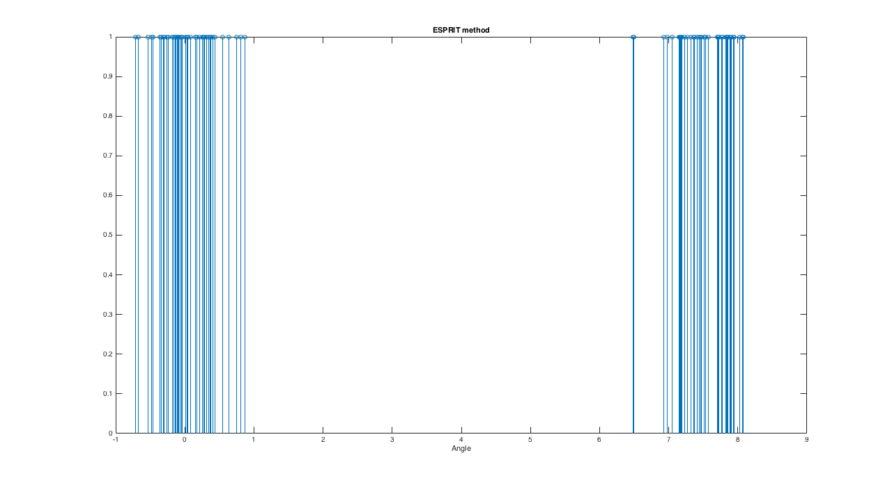
Q1 Conclusions
=15 degree
- Each method gives a satisfactory result, i.e. the methods are able to resolve both the sources successfully.
- The peaks in Capon's method are much sharper, leading to better estimate.
- Comparing Root Music and ESPRIT, The Root Music estimates are much closer together (implying less variance). The average value is also closer to the actual value in case of Root Music
- The properties of various time series estimators are rougly analogous to the temporal case, with Capon better than Beamforming, and, RootMusic better than ESPRIT
=7.5 degree
- Beamforming is not able to resolve both the sources, it gives a single peak. Even in Capon's method, the resolution is not good. It gives, what appears to be a peak with 2 small humps on top.
- Comparing Root Music and ESPRIT, The Root Music estimates are much closer together (implying less variance). In general, the values are much widely spread as compared to the previous value of theta=15.
- The properties of various time series estimators are rougly analogous to the temporal case, with Capon better than Beamforming, and, Root Music better than ESPRIT
Question 2 : Spatial Spectral Estimators applied to Measured Data
Loading the data from file submarine.mat
load('./data/submarine.mat'); % We get the measurements from the six sensors (4096 instances), the % distance between sensors and the wavelength of the source. dl = d/lambda;
Q2 Beamforming Method
beamf = beamform(X, 180, dl); fig = figure; plot(20*log10(beamf)) title('Beamforming spatial spectrum') ylabel('Power (dB)') xlabel('angle+90deg') set(gcf, 'Position', get(0, 'Screensize')); saveas(fig,'./results/Q2/beamf_q2.jpg','jpg');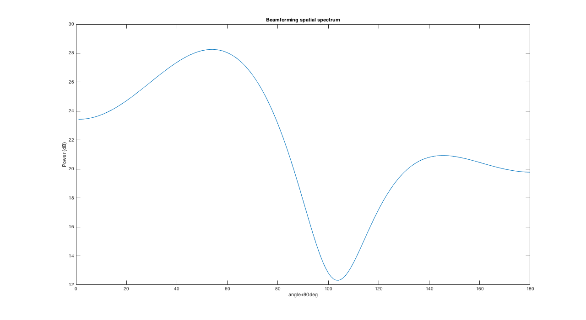
From the graphs we can see that there are 2 peaks implying 2 sources.
Q2 Capon Method
capon = capon_sp(X, 180, dl); fig = figure; plot(20*log10(capon)) title('Capon''s method spatial spectrum') ylabel('Power (dB)') xlabel('angle+90deg') set(gcf, 'Position', get(0, 'Screensize')); saveas(fig,'./results/Q2/capon_q2.jpg','jpg');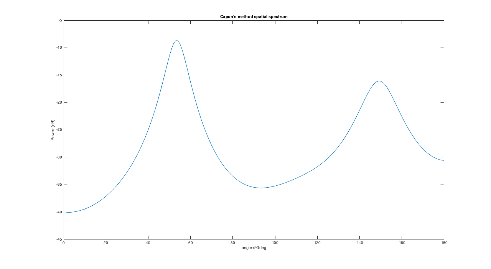
From the graphs we can see that there are 2 peaks implying 2 sources.
Q2 Root-Music Estimate
Now, we use the no of sources (2) as input for the Root-Music method
root_theta_q2 = root_music_doa(X, 2, dl)
root_theta_q2 = -36.9553 53.9747
Q2 ESPRIT Estimate
Now, we use the no of sources (2) as input for the ESPRIT method
esprit_theta_q2 = esprit_doa(X, 2, dl)
esprit_theta_q2 = -36.9432 53.7314
Q2 Conclusion
The two submarines are located at angles of approx -36 degrees and 53 degrees respectively
Written Assignment : Ques 2
Plot for the beamforms for the L shaped array
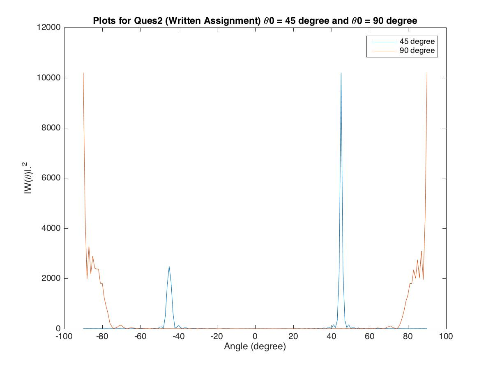